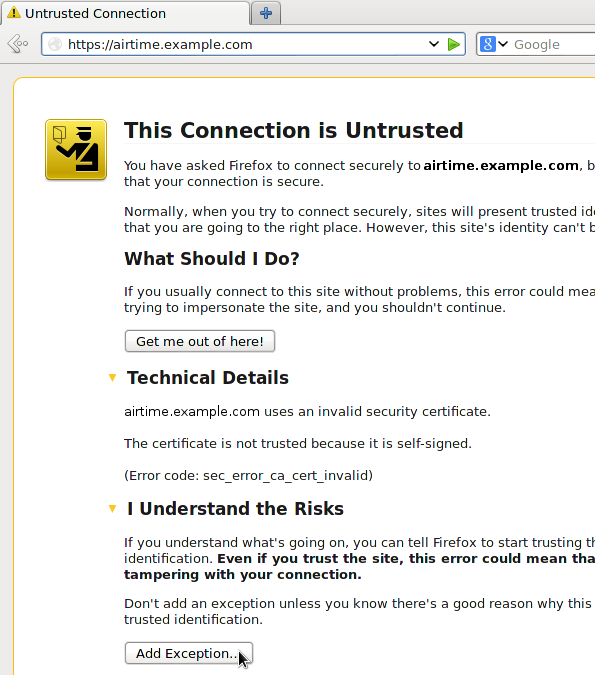
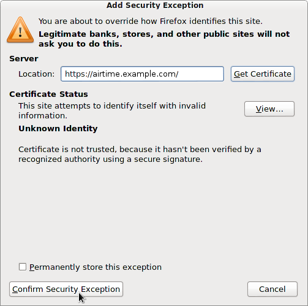
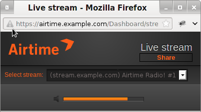

To increase the security of your server, you can enable encrypted access to the LibreTime administration interface, and direct your users towards this more secure login page. The main advantage of using this encryption is that your remote users' login names and passwords are not sent in plain text across the public Internet or untrusted local networks, such as shared Wi-Fi access points.
The padlock icon in a web browser's address bar depends on the browser's recognition of an encryption certificate. Because the users of your LibreTime server will often be known to you personally, it is feasible to use a self-signed certificate for this purpose. Alternatively, you can pay a Certificate Authority to sign the certificate for you. LibreTime Pro servers are pre-configured with a certificate signed by a Certificate Authority which is automatically recognised by all popular browsers.
Deploying a self-signed certificate
The Debian/Ubuntu package ssl-cert creates a snakeoil certificate and key based on your server's hostname. This gratis certificate and key pair created under the /etc/ssl/certs/ and /etc/ssl/private/ directories will not be recognised by users' browsers without manual intervention. You can install the ssl-cert package with the command:
sudo apt-get install ssl-certIf the hostname of your server does not match the domain name you intend to use with the LibreTime virtual host, the user's browser will present an additional security warning. You can set the domain name of the certificate by editing the file /usr/share/ssl-cert/ssleay.cnf to replace the @HostName@ variable:
commonName = @HostName@with the domain name used by LibreTime:
commonName = airtime.example.comThen save the file and regenerate the certificate with the command:
sudo make-ssl-cert generate-default-snakeoil --force-overwriteYou should enable additional Apache modules for page redirections, custom headers and secure access:
sudo a2enmod alias headers sslNext, edit the virtual host configuration for your LibreTime server to include a stanza for the https:// interface on port 443 and a redirect for logins from port 80:
sudo nano /etc/apache2/sites-available/airtime-vhost.confUsing the following configuration for Apache 2.2 as a guide, replace airtime.example.com with the name of your server and admin@example.com with your email address. The older SSLv2 and SSLv3 protocols and SSL compression should be disabled, as they are generally believed to be insecure. You may wish to create a ServerAlias for users to access the administration interface over https:// if required.
On port 80, Apache's alias module is used to set a Redirect permanent for the login page. Optionally, access could be denied to all sites except localhost and any other LibreTime servers on your network, so that unencrypted communication between LibreTime components can continue.
<VirtualHost *:443>
SSLEngine on
SSLProtocol All -SSLv2 -SSLv3
SSLCompression off
SSLCertificateFile /etc/ssl/certs/ssl-cert-snakeoil.pem
SSLCertificateKeyFile /etc/ssl/private/ssl-cert-snakeoil.key
Header always set Strict-Transport-Security "max-age=31536000"
ServerName airtime.example.com
#ServerAlias www.example.com
ServerAdmin admin@example.com
DocumentRoot /usr/share/airtime/php/airtime_mvc/public
DirectoryIndex index.php
<Directory /usr/share/airtime/php/airtime_mvc/public>
Options -Indexes FollowSymLinks MultiViews
AllowOverride all
Order allow,deny
Allow from all
</Directory>
</VirtualHost>
<VirtualHost *:80>
ServerName airtime.example.com
ServerAdmin admin@example.com
DocumentRoot /usr/share/airtime/php/airtime_mvc/public
Redirect permanent /login https://airtime.example.com/login
SetEnv APPLICATION_ENV "production"
<Directory /usr/share/airtime/php/airtime_mvc/public>
Options -Indexes FollowSymLinks MultiViews
AllowOverride All
Order allow,deny
Allow from all
</Directory>
</VirtualHost>Save the file with Ctrl+O and exit the nano editor with Ctrl+X. Then restart Apache with the command:
sudo service apache restartWhen attempting to log into your server via http:// in future, you should be redirected to https:// automatically.
Importing a self-signed certificate into the browser
The first time you access an LibreTime server with a self-signed certificate over https:// your browser will block the login page and display a security warning. In Mozilla Firefox, you can click Technical Details to confirm that the warning is due to the certificate being self-signed before clicking the Add Exception button. In Google Chrome, the button to click on the security warning page is Proceed Anyway.

On the next page in Firefox, click the Get Certificate button to inspect the details of the self-signed certificate. If all is well, click the Confirm Security Exception button. You should now be able to proceed to the https:// login page.

If the users of your LibreTime server wish to avoid going through these steps, or they do not trust the remote LibreTime server to be what it claims to be, it is also possible to import a trusted local copy of a certificate file into the browser. For example, in Firefox version 30 preferences, you can go into the Advanced section, click the Certificates tab, then click the View Certificates button. On the Servers tab of the Certificate Manager, there is an Import button which enables you to load a certificate file from the local computer.
Mixed encrypted and unencrypted content
Whether your certificate is self-signed or not, you will see browser security warnings whenever a https:// page is delivering unencrypted content, such as the stream from an Icecast server. In Firefox, an exclamation mark icon is displayed in the address bar of the Listen pop-up.
